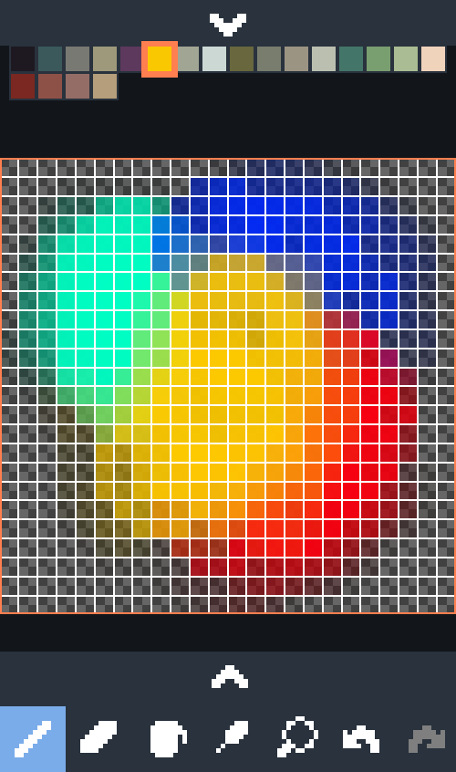
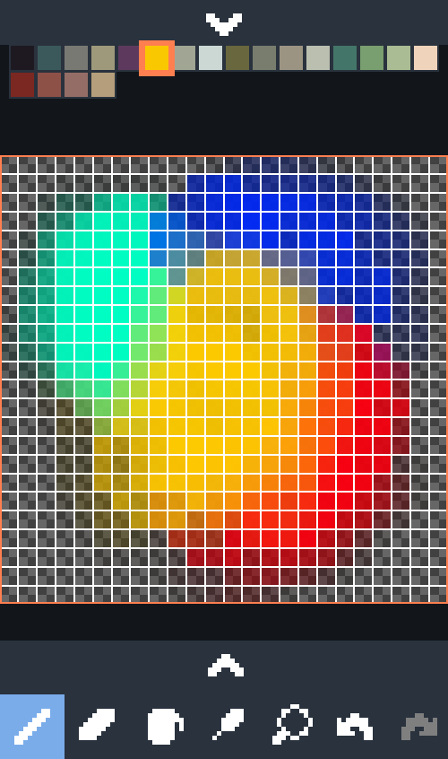

A pixel editor made in Java + libGDX for Android.
Features include:
 



A prototype 2D sandbox game.


A sound visualizer that takes an image and shifts its pixels to the rhythm of music.


An in-browser tool for displaying polar graphs, with syntax highlighting and time variables. Written in Javasript using easelJS.

Various projects for terrain generation.


An in-browser tool that generates pixel art of pine trees, using polygons and customizable filters. Written in Java using libGDX.

A multiplayer shoot-em-up.